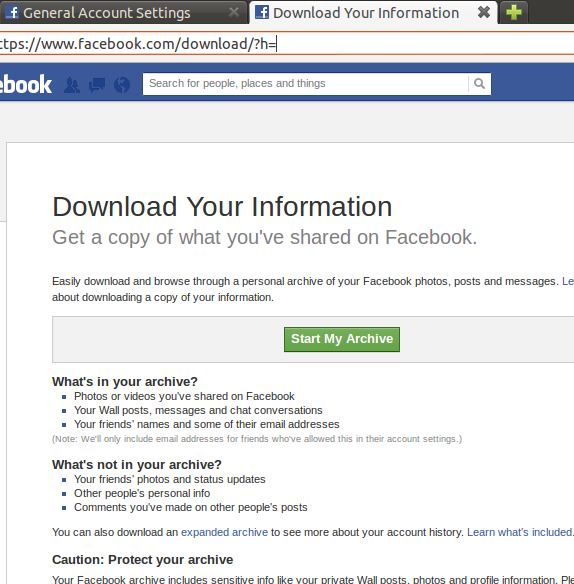
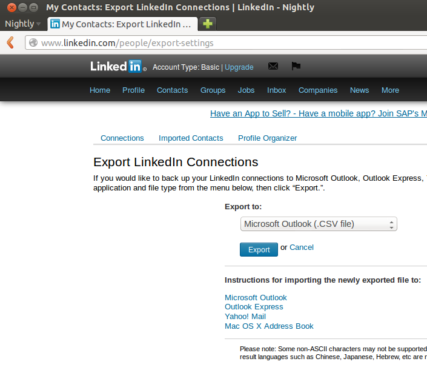

unhosted web apps
freedom from web 2.0's monopoly platforms
8. Collecting and organizing your data
As a member of the No Cookie Crew you will be using unhosted web apps for everything you currently use hosted web apps for. None of these apps will store your user data, because they do not have a server backend to store it on. You will have to store your data yourself.
Collecting and organizing your own data is quite a bit of work, depending on how organized you want to be about it. This work was usually done by the developers and system administrators of the hosted web apps you have been using. The main task is to "tidy your room", like a kid putting all the toys back in the right storage place inside their bedroom.
Collecting your data from your own backups
We sometimes like to pretend that the Chromebook generation is already here, and that all our data is in the cloud. In reality, obviously, a lot of our data is still just on our laptop hard disk, on external hard disks, on USB sticks, and on DVDs that we created over the years.
The first step towards making this data usable with unhosted web apps is to put it all together in one place. When I started doing this, I realised I have roughly four types of data, if you split it by the reason why I'm keeping it:
- Souvenirs: mainly folders with photos, and videos. I hardly ever access these, but at the same time they are in a way the most valuable, since they are unique and personal, and represent powerful memories.
- Products: things I published in the past, like for instance papers I wrote as a student, code I published over the years, and the content of my website. In several cases I have source files that were not published as such, for instance original vector graphics files of designs that were published only as raster images, or screen-printed onto a T-shirt. It's all the original raw copies of the things that took me some effort to create, and that I may want to reuse in the future.
- Media Cache: my music collection, mostly. It used to be that when you lost a CD, you could no longer listen to it, but for all but the most obscure and rare albums, this is no longer the case, and should you lose this data, then it's easy to get it back from elsewhere. The only reason you cache it is basically so that you don't have to stream it.
- Working Set: the files I open and edit most often, but that are part of a product that is not finished yet, or that (unlike souvenirs) have only a temporary relevance.
Most work goes into pruning the ever growing Working Set: determining which files and folders can be safely deleted (or moved to the "old/" folder), archiving all the source files of products I've published, and deciding which souvenirs to keep and which ones really are just more of the same.
My "to do" list and calendar clearly fit into "Working Set", but the one thing that doesn't really fit into any of this is my address book. It is at the same time part of my working set, my products, and my souvenirs. I use it on a daily basis, but many contacts in there are from the past, and I only keep them just in case some day I want to reuse those contacts for a new project, and of course there is also a nostalgic value to an address book.
Some stuff on your Indie Web server, the rest on your FreedomBox server
At first, we had the idea of putting all this data of various types into one remoteStorage account. This idea quickly ran into three problems: first, after scanning in all my backup DVDs, even after removing all the duplicate folders, I had gathered about 40 Gigs, and my server only has 7 Gigs of disk space. It is possible to get a bigger server of course, but this didn't seem like an efficient thing to spend money on, especially for the Media Cache data.
Second, I am often in places with limited bandwidth, and even if I would upload 40 Gigs to my remote server, it would still be a waste of resources to try to stream music from there for hours on end.
Third, even though I want to upload my photos to a place where I can share them with friends, I have a lot of my photos in formats that take up several Megabytes, and typically photos you share online would probably be more around 50 K for good online browsing performance. So even if I upload all my photos to my Indie Web server, I would want to upload the "web size" version of them, and not the huge originals.
After some discussion with Basti and François, I concluded that having one remote storage server is not enough to cover all use cases: you need two. The "Indie Web" one should be always on, on a public domain name, and the "FreedomBox" one should be in your home.
On your Indie Web server, you would store only a copy of your Working Set data, plus probably sized down derivatives of some of your products and souvenirs. On your FreedomBox you would simply store everything.
This means you will already have to do some manual versioning, probably, and think about when to upload something to your Indie Web
server. At some point we will probably want to build publishing apps that connect to both accounts and take care of this, but for now, since
we have webshell access to both servers, we can do this with a simple scp command.
FreedomBox and the remoteStorage-stick
The topic of having a data server in your home brought up the work Markus and I did on combining the FreedomBox with remoteStorage. Our idea was to split the FreedomBox into the actual plug server and a USB drive that you stick into it, for the data storage. The two reasons for splitting the device this way are that it makes it clear to the user where their data is and how they can copy it and back it up, and that it makes tech support easier, since the device contains no valuable data, and can thus easily be reset to factory settings.
To allow this FreedomBox to also serve a public website, we would sell a package containing:
- the plug server
- the 'remoteStorage-stick'
- a Pagekite account to tunnel through
- a TLS certificate for end-to-end encryption
- tokens for flattering unhosted web apps in the 5apps store
There is still a long way to go to make this a sellable product, but it doesn't hurt to start experimenting with its architecture ourselves first, which is why I bought a usb drive, formatted it as ext4 with encryption, and mounted it as my 'remoteStorage' stick. It's one of those tiny ones that have the hardware built into the connector and don't stick out, so I leave it plugged in to my laptop by default.
Putting your data into your remoteStorage server
By way of FreedomBox prototype, I installed ownCloud on my localhost and pointed a 'freedombox' domain to 127.0.0.1 in my /etc/hosts.
To make your data available through a remoteStorage API, install one of the remoteStorage-compatible personal data servers listed under 'host your own storage'
on remotestorage.io/get/. I went for the ownCloud one here, because (like the php-remoteStorage one) it maps data
directly onto the filesystem (it
uses extended attributes to store the Content-Types). This means you can just import data onto your remoteStorage account by copying it onto your
remoteStorage-stick. Do make sure your remoteStorage-stick is formatted with a filesystem that supports extended file attributes.
Export your data from Google, Facebook and Twitter
No Cookie Crew - Warning #5: You will have to log in to these services now, because apart from Twitter, they do not offer this same functionality through their APIs.
This part is quite fun: Data Liberation! :) It is actually quite easy to download all your data from Google. This is what it looks like:

Facebook offers a similar service, even though the contacts export is quite rudimentary, but you can export at least your photos:
And this is what the LinkedIn one looks like:
For twitter, tweet data is mostly transient, so there is not much point probably in exporting that. Instead, you could start saving a copy of everything you tweet through sockethub onto your remoteStorage from now on. But to export your contacts, if there are not too many, you can simply scrape https://twitter.com/following and https://twitter.com/followers by opening the web console (Ctrl-Shift-K in Firefox), and pasting:
var screenNames = [],
accounts = document.getElementsByClassName('account');
for(var i=0; i<accounts.length; i++) {
screenNames.push(
accounts[i].getAttribute('data-screen-name'));
}
alert(screenNames);
Do make sure you scroll down first to get all the accounts in view. You could also go through the api of course (see episode 5).
Converting your data to web-ready format
Although you probably want to keep the originals as well, it makes sense to convert all your photos to a 50Kb "web size". If you followed episode 3, then you have an Indie Web server with end-to-end encryption (TLS), so you can safely share photos with your friends by uploading them to unguessable URLs there. It makes sense to throttle 404s when you do this, although even if you don't, as long as the URLs are long enough, it is pretty unlikely that anybody would successfully guess them within the lifetime of our planet.
In order to be able to play music with your browser, you need to convert your music and sound files to a format that your browser of
choice supports, for instance ogg. On unix you can use the avconv tool for this (previously known as ffmpeg):
for i in `ls */*/*` ; do
echo avconv -i $i -acodec libvorbis -aq 60 \
~/allmydata/mediaCache/$i.ogg ;
done | sh
To convert your videos to ogg, you could try something like:
for i in `ls *.AVI` ; do
echo avconv -i $i -f ogg \
~/allmydata/souvenirs/$i.ogg ;
done | sh
I had some trouble with the resulting video quality, and sound didn't work for some files, but that is a matter of playing around with the media conversion software on your computer until you get it the way you want it.
Playing your music through your browser
If you're setting up your remoteStorage server to serve your music files, then make sure you put them under /public/music/ on your
remoteStorage, so you can use François' Unhosted Music Player. Otherwise, you can also use file:///
URLs to play your music. In the folder containing the files, simply add an html file that acts as a playlist app for them:
<!DOCTYPE html>
<html lang="en">
<head>
<meta charset="utf-8" />
<title>Yo Skrill, drop it hard (playlist)
</head>
<body>
<h1>Programming
<audio id="player">
<ul id="playlist">
</body>
<script>
var songs = [
'99 problems.ogg',
'skrillex.ogg',
'minimal.ogg'
];
var i=0;
document.getElementById('player').controls=false;
function go() {
document.getElementById('player').src=songs[i];
document.getElementById('player').play();
var str ='';
for(var j=0; j<songs.length; j++) {
if(j==i) {
str += '<li><strong>'+songs[j]+'</strong>(playing)';
} else {
str += '<li>'+songs[j]+'<input type="submit" '
+ 'value="play" onclick="i='+j+'; go();" /></li>';
}
}
document.getElementById('playlist').innerHTML = str;
}
document.querySelector('audio')
.addEventListener('pause', function() {
i = (i+1) % songs.length;
go();
}, false);
go();
</script>
</html>
Use html to organize your data
Remember, it's the web. You drive. You can easily add html pages similar to the music playlist above, to create your own
photo album designs. You can create photo albums that mix videos in them, using the html5 <video> tag,
and even add css animations, svg graphics, 3D effects, and interactive navigation features to your photo albums and
souvenir scrapbooks. Maybe
even some make some sound recordings when you are on holiday, and add them into a your next
"photo album".
I also found that so far, it has been far more important to me to have all my imported contacts in some format on my remoteStorage, even if it is just a text file that I search through with Ctrl-F, than to necessarily have a polished app for each task. I also use javascript a lot to, for instance, read in csv files and do some spreadsheet calculations on them.
A lot of the applications we usually assume are necessary on a computer (spreadsheets are a prime example) become irrelevant as soon as you learn how to develop your own unhosted web apps. And having the power of the web at your own fingertips, instead of being tied to what software providers give you, also gives a satisfying feeling of freedom and opportunity. And it makes being a member of the No Cookie Crew so much more fun! :)